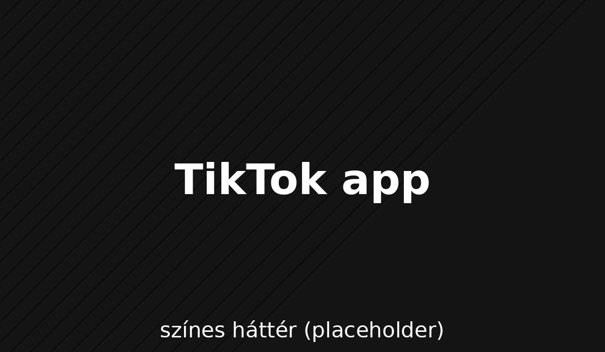

TikTok
A TikTok (kínai: 抖音, Dǒuyīn) kínai videómegosztó közösségi hálózati szolgáltatás, amit 2011-ben alapított a pekingi székhelyű ByteDance cég. Rövid tánc-, szinkron-, komédia- és tehetségvideók készítésére szolgál.
Az alkalmazást 2017-ben indították iOS és Android platformokra Kínán kívüli piacokon. A ByteDance 2016 szeptemberében indította el először a Douyin-t, a TikTok elődjét a kínai piacon. Elérhető több mint 150 országban, mintegy 35 nyelven. A Douyin hasonlóan lényegében ugyanaz az alkalmazás, azonban külön szervereken futnak, hogy megfeleljen a kínai cenzúra korlátozásainak. Az alkalmazás lényegének része a felhasználók számára, hogy rövid zene és szinkronizáló videókat készíthessenek 3 másodperctől már akár 10 percig. Az alkalmazás népszerű az Egyesült Államokban is, a TikTok Kínában Douyin néven működik, szerverei olyan országokban megtalálhatók, ahol az alkalmazás elérhető.
Népszerű használati módok
- Szórakozás és kikapcsolódás
- Önkifejezés és kreativitás
- Közösségépítés és kapcsolatteremtés
- Információgyűjtés és tanulás
- Marketing és üzleti lehetőségek
Betiltások
| Ország | Év | Ok |
|---|---|---|
| Indonézia | 2018 | Nem megfelelő tartalom |
| India | 2020 | Gyermek veszélyeztetése |
| Egyesült Államok | Nemzetbiztonsági aggályok, adatvédelmi problémák | |
| Afganisztán | 2022 | Fiatalok félrevezetése |
A Vivien & Norbi TikTok csatornája humoros, kreatív és hétköznapi videókat kínál egy mindennapjairól. Pozitív üzeneteik és interaktív tartalmaik népszerűvé teszik őket a TikTok közösség körében.
MegnézemCsenge TikTok csatornáján humoros és trendi videók jelennek meg, amelyek gyakran kapcsolódnak a mindennapi élet kihívásaihoz és a fiatalok világához.
MegnézemA Balazskicks TikTok csatornája a sneakerkultúra és a cipő bemutatása mellett tippeket és ajánlásokat is ad, és betekintést nyújt a trendekbe.
MegnézemHollósi Jázmin csatornáján az életmód és a személyes utazás a fókusz: inspiráló tartalmakat oszt meg, tapasztalatait és a fejlődést.
Megnézem